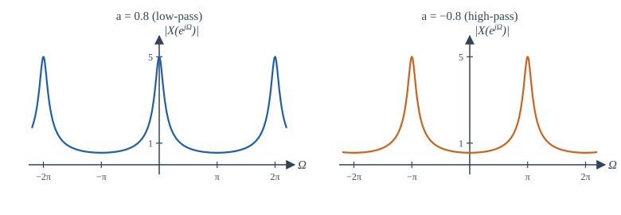
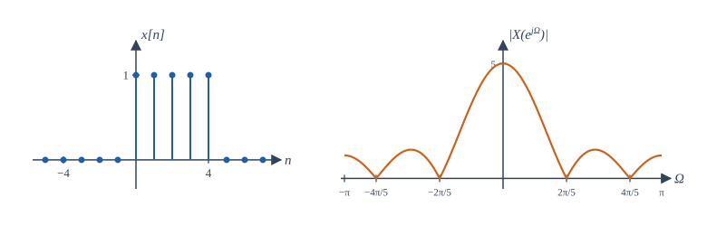

Chapter 7: The Discrete-Time Fourier Transform¶
Spectra of sequences, frequency responses of digital systems, and the family of four Fourier representations
Learning outcomes
After this chapter you should be able to:
- define the DTFT and its inverse, and explain why the DTFT is periodic with period \(2\pi\);
- compute the DTFT of impulses, exponentials and rectangular sequences;
- use the properties of the DTFT, especially time shift, convolution and modulation;
- find the frequency response of a system described by a difference equation and evaluate it at chosen frequencies;
- place the CTFS, CTFT, DTFS and DTFT in one picture and state the duality between periodicity and discreteness.
7.1 Definition¶
The discrete-time Fourier transform (DTFT) of a sequence \(x[n]\) is
and the inverse DTFT is
where the integral is over any interval of length \(2\pi\), usually \(-\pi\) to \(\pi\). As in the continuous case, the synthesis equation expresses \(x[n]\) as a superposition of complex exponentials \(e^{j\Omega n}\), and \(X(e^{j\Omega})\) gives the density of each frequency. The frequency \(\Omega\) is measured in radians per sample.
The notation \(X(e^{j\Omega})\) looks heavy but is chosen deliberately: it is the z-transform \(X(z)\) of Chapter 11 evaluated on the unit circle \(z = e^{j\Omega}\), just as \(X(j\omega)\) is the Laplace transform on the imaginary axis.
Why the DTFT is periodic¶
Because \(n\) is an integer, \(e^{-j(\Omega + 2\pi)n} = e^{-j\Omega n}\). Every term of the sum is unchanged when \(\Omega\) increases by \(2\pi\), so
The DTFT is always periodic with period \(2\pi\). This is the frequency-domain face of a fact met in Section 1.6: discrete-time exponentials whose frequencies differ by \(2\pi\) are identical sequences. All the information is in one period, and the inverse transform integrates over one period only.
Within a period, the low frequencies are near \(\Omega = 0\) (and, equivalently, near \(\pm2\pi\)), and the highest frequency is \(\Omega = \pm\pi\), where \(e^{j\pi n} = (-1)^n\) alternates in sign at every sample. A spectrum concentrated near \(\Omega = 0\) belongs to a slowly varying sequence; one concentrated near \(\pm\pi\) belongs to a rapidly alternating one.
When \(x[n]\) comes from sampling a CT signal every \(T_s\) seconds, a continuous frequency \(\omega\) (rad/s) appears in the sequence at \(\Omega = \omega T_s\) (rad/sample). So \(\Omega = \pi\) corresponds to \(\omega = \pi/T_s\), which is half the sampling rate. Chapter 9 explains why nothing above that frequency can be represented.
Convergence¶
The DTFT sum converges absolutely, to a continuous function of \(\Omega\), if \(x\) is absolutely summable: \(\sum|x[n]| < \infty\). It converges in the energy sense if \(x\) has finite energy. Sequences such as \(u[n]\) and \(\cos\Omega_0 n\) need impulses in frequency, as in Section 7.5. Growing sequences have no DTFT; they need the z-transform.
7.2 Standard DTFT pairs¶
Example 7.1 The impulse and the shifted impulse
\(\delta[n] \leftrightarrow 1\) and \(\delta[n - n_0] \leftrightarrow e^{-j\Omega n_0}\). A single sample contains all frequencies equally; a delay of \(n_0\) samples adds a phase \(-\Omega n_0\), linear in frequency.
Example 7.2 The exponential
For \(x[n] = a^n u[n]\) with \(|a| < 1\):
a geometric series with ratio of magnitude \(|a| < 1\). Its squared magnitude is
At \(\Omega = 0\) the magnitude is \(\frac{1}{1 - a}\); at \(\Omega = \pi\) it is \(\frac{1}{1 + a}\). For \(a = 0.8\) these are 5 and 0.556: the sequence, which decays smoothly, is concentrated at low frequencies. For \(a = -0.8\) they swap: the sequence alternates in sign, and its spectrum is concentrated near \(\pi\) (Figure 7.1).

Example 7.3 The rectangular sequence
Let \(x[n] = 1\) for \(0 \le n \le N - 1\) and 0 otherwise. Using the finite geometric series,
Factor \(e^{-j\Omega N/2}\) from the numerator and \(e^{-j\Omega/2}\) from the denominator:
The ratio of sines is the Dirichlet kernel, the discrete-time cousin of the sinc. It equals \(N\) at \(\Omega = 0\) and is zero at \(\Omega = 2\pi k/N\) for \(k = 1, \ldots, N-1\). The phase factor is linear: the sequence is symmetric about \(n = (N-1)/2\), which acts as a delay of \((N-1)/2\) samples. As with the CT pulse, a longer sequence has a narrower main lobe, of width \(4\pi/N\).

Example 7.4 The ideal discrete-time low-pass filter
An ideal low-pass filter with cut-off \(W\) (\(0 < W < \pi\)) has \(H(e^{j\Omega}) = 1\) for \(|\Omega| < W\) and 0 for \(W < |\Omega| \le \pi\), repeated with period \(2\pi\). Its impulse response is
As in continuous time, this impulse response extends to \(n = -\infty\) and decays only as \(1/n\): the ideal filter is neither causal nor stable. Truncating and windowing this sequence is the basis of FIR filter design in Chapter 12.
| \(x[n]\) | \(X(e^{j\Omega})\) (one period, or for all \(\Omega\)) |
|---|---|
| \(\delta[n]\) | \(1\) |
| \(\delta[n - n_0]\) | \(e^{-j\Omega n_0}\) |
| \(a^n u[n]\), \(\lvert a\rvert < 1\) | \(\dfrac{1}{1 - ae^{-j\Omega}}\) |
| \((n + 1)a^n u[n]\), \(\lvert a\rvert < 1\) | \(\dfrac{1}{(1 - ae^{-j\Omega})^2}\) |
| \(a^{\lvert n\rvert}\), \(\lvert a\rvert < 1\) | \(\dfrac{1 - a^2}{1 - 2a\cos\Omega + a^2}\) |
| \(1\) for \(0 \le n \le N-1\) | \(e^{-j\Omega(N-1)/2}\dfrac{\sin(\Omega N/2)}{\sin(\Omega/2)}\) |
| \(\dfrac{\sin Wn}{\pi n}\), \(0 < W < \pi\) | \(1\) for \(\lvert\Omega\rvert < W\), \(0\) for \(W < \lvert\Omega\rvert \le \pi\) |
| \(1\) | \(2\pi\sum_k\delta(\Omega - 2\pi k)\) |
| \(e^{j\Omega_0 n}\) | \(2\pi\sum_k\delta(\Omega - \Omega_0 - 2\pi k)\) |
| \(\cos\Omega_0 n\) | \(\pi\sum_k[\delta(\Omega - \Omega_0 - 2\pi k) + \delta(\Omega + \Omega_0 - 2\pi k)]\) |
| \(u[n]\) | \(\dfrac{1}{1 - e^{-j\Omega}} + \pi\sum_k\delta(\Omega - 2\pi k)\) |
Table 7.1. Common DTFT pairs.
7.3 Properties of the DTFT¶
The properties closely parallel those of the CT transform, with differences where the integer nature of \(n\) matters (there is no simple time scaling, for instance). Let \(x \leftrightarrow X\) and \(y \leftrightarrow Y\).
| Property | Sequence | DTFT |
|---|---|---|
| Linearity | \(ax[n] + by[n]\) | \(aX(e^{j\Omega}) + bY(e^{j\Omega})\) |
| Time shift | \(x[n - n_0]\) | \(e^{-j\Omega n_0}X(e^{j\Omega})\) |
| Frequency shift | \(e^{j\Omega_0 n}x[n]\) | \(X(e^{j(\Omega - \Omega_0)})\) |
| Time reversal | \(x[-n]\) | \(X(e^{-j\Omega})\) |
| Conjugation | \(x^*[n]\) | \(X^*(e^{-j\Omega})\) |
| Differencing | \(x[n] - x[n-1]\) | \((1 - e^{-j\Omega})X(e^{j\Omega})\) |
| Accumulation | \(\sum_{k=-\infty}^{n}x[k]\) | \(\dfrac{X(e^{j\Omega})}{1 - e^{-j\Omega}} + \pi X(e^{j0})\sum_k\delta(\Omega - 2\pi k)\) |
| Differentiation in frequency | \(n\,x[n]\) | \(j\dfrac{dX(e^{j\Omega})}{d\Omega}\) |
| Expansion by \(L\) | \(x[n/L]\) for \(n\) a multiple of \(L\), else 0 | \(X(e^{jL\Omega})\) |
| Convolution | \(x[n] * y[n]\) | \(X(e^{j\Omega})\,Y(e^{j\Omega})\) |
| Multiplication | \(x[n]\,y[n]\) | \(\dfrac{1}{2\pi}\displaystyle\int_{2\pi}X(e^{j\theta})Y(e^{j(\Omega - \theta)})\,d\theta\) |
| Real sequence | \(x\) real | \(X(e^{-j\Omega}) = X^*(e^{j\Omega})\) |
| Parseval | \(\displaystyle\sum_n\lvert x[n]\rvert^2\) | \(\dfrac{1}{2\pi}\displaystyle\int_{2\pi}\lvert X(e^{j\Omega})\rvert^2d\Omega\) |
Table 7.2. Properties of the DTFT.
Two entries differ visibly from the CT versions. Multiplication gives a periodic convolution of the spectra, an integral over one period only, because both spectra are periodic. Expansion (inserting \(L - 1\) zeros between samples) compresses the spectrum by \(L\), so that \(L\) copies of the original period now fit into \(2\pi\); the extra copies are called images, and removing them is the job of the interpolation filter in Chapter 9.
The frequency-shift property with \(\Omega_0 = \pi\) is worth noting: multiplying by \((-1)^n = e^{j\pi n}\) shifts the spectrum by \(\pi\), turning low frequencies into high and vice versa. It turns a low-pass filter into a high-pass one: if \(h[n]\) is low-pass, \((-1)^n h[n]\) is high-pass. Figure 7.1 shows exactly this, since \((-0.8)^n = (-1)^n(0.8)^n\).
Example 7.5 Using properties
Find the DTFT of \(y[n] = (0.5)^{n-2}u[n - 2]\) and of \(z[n] = n(0.5)^n u[n]\).
\(y\) is \(x[n - 2]\) with \(x[n] = 0.5^n u[n]\), so \(Y(e^{j\Omega}) = \dfrac{e^{-j2\Omega}}{1 - 0.5e^{-j\Omega}}\).
For \(z\), use differentiation in frequency: \(j\frac{d}{d\Omega}\left(1 - 0.5e^{-j\Omega}\right)^{-1} = j\cdot\frac{-0.5je^{-j\Omega}}{(1 - 0.5e^{-j\Omega})^2} = \dfrac{0.5e^{-j\Omega}}{(1 - 0.5e^{-j\Omega})^2}\).
7.4 Frequency response of discrete-time systems¶
For a DT LTI system with impulse response \(h[n]\), the convolution property gives \(Y(e^{j\Omega}) = H(e^{j\Omega})X(e^{j\Omega})\), where the frequency response \(H(e^{j\Omega})\) is the DTFT of \(h[n]\). By the eigenfunction property, the input \(e^{j\Omega_0 n}\) produces \(H(e^{j\Omega_0})e^{j\Omega_0 n}\), and for a real system the input \(\cos(\Omega_0 n + \phi)\) produces
For a system described by the difference equation \(\sum_{k=0}^{N}a_k y[n-k] = \sum_{k=0}^{M}b_k x[n-k]\), the time-shift property turns each delay into a factor \(e^{-j\Omega}\):
As in continuous time, the frequency response is read off the coefficients of the equation.
Example 7.6 The three-point moving average
\(y[n] = \frac13(x[n] + x[n-1] + x[n-2])\) has
The magnitude \(|1 + 2\cos\Omega|/3\) is 1 at \(\Omega = 0\), \(\frac23\) at \(\Omega = \pi/3\), zero at \(\Omega = 2\pi/3\) and \(\frac13\) at \(\Omega = \pi\). The filter passes slow variations, completely removes the frequency \(2\pi/3\) (a sequence with period 3, which averages to zero over any three samples), and attenuates other high frequencies. The phase is \(-\Omega\) (with an extra \(\pi\) where \(1 + 2\cos\Omega < 0\)): a delay of one sample, the centre of the averaging window.
Example 7.7 Response of a recursive filter to a sinusoid
The system \(y[n] = 0.8\,y[n-1] + x[n]\) receives \(x[n] = 2\cos(\pi n/2)\). Find the steady-state output.
\(H(e^{j\Omega}) = \dfrac{1}{1 - 0.8e^{-j\Omega}}\). At \(\Omega = \pi/2\), \(e^{-j\pi/2} = -j\), so \(H = \dfrac{1}{1 + 0.8j}\), with \(|H| = 1/\sqrt{1.64} = 0.781\) and \(\angle H = -\arctan 0.8 = -0.675\) rad (\(-38.7°\)). Therefore
7.5 Periodic sequences¶
A periodic sequence with DTFS coefficients \(a_k\) (Section 5.8) has the DTFT
a train of impulses at the harmonic frequencies \(2\pi k/N\). Since \(a_k\) is periodic in \(k\) with period \(N\), the impulse train repeats every \(2\pi\), as every DTFT must. The constant and cosine entries of Table 7.1 are special cases.
7.6 The four Fourier representations¶
We now have four Fourier tools, one for each combination of continuous or discrete time and periodic or aperiodic signal.
| Periodic in time | Aperiodic in time | |
|---|---|---|
| Continuous time | CTFS: \(a_k = \frac{1}{T_0}\int_{T_0}x(t)e^{-jk\omega_0t}dt\) spectrum discrete, aperiodic |
CTFT: \(X(j\omega) = \int x(t)e^{-j\omega t}dt\) spectrum continuous, aperiodic |
| Discrete time | DTFS: \(a_k = \frac{1}{N}\sum_{\langle N\rangle}x[n]e^{-jk2\pi n/N}\) spectrum discrete, periodic |
DTFT: \(X(e^{j\Omega}) = \sum x[n]e^{-j\Omega n}\) spectrum continuous, periodic |
Table 7.3. The four Fourier representations.
The table displays a beautiful duality:
- Periodic in one domain means discrete in the other. Periodic signals have line spectra (CTFS, DTFS); periodic spectra belong to discrete-time signals (DTFS, DTFT).
- Aperiodic in one domain means continuous in the other. Aperiodic signals have continuous spectra (CTFT, DTFT); continuous-time signals have aperiodic spectra (CTFS, CTFT).
The DTFS is the only one of the four in which both domains are discrete and finite: \(N\) numbers in, \(N\) numbers out. That is the one a computer can calculate exactly, and it is the subject of the next chapter, under the name of the discrete Fourier transform.
Key idea
Sampling in one domain makes the other domain periodic. Sampling a CT signal in time makes its spectrum periodic (the DTFT); sampling a spectrum in frequency makes the signal periodic (the Fourier series). Chapter 9 makes the first statement precise.
7.7 Evaluating the DTFT numerically¶
For a finite sequence the DTFT is a finite sum, which can be evaluated at any frequency. For an infinite but decaying sequence, truncating the sum gives an approximation whose error is the size of the neglected tail. The program below evaluates the frequency responses of Examples 7.6 and 7.2 at four frequencies and confirms the \(2\pi\) periodicity.
import numpy as np
def dtft(x, n, W):
"""X(e^{jW}) = sum_n x[n] e^{-jWn} for a finite sequence x on indices n."""
return np.array([np.sum(x * np.exp(-1j * w * n)) for w in W])
W = np.array([0, np.pi / 3, 2 * np.pi / 3, np.pi])
# Three-point moving average h[n] = 1/3, n = 0, 1, 2
n = np.arange(3)
H = dtft(np.ones(3) / 3, n, W)
print("moving average |H| :", np.round(np.abs(H), 4))
print("formula |1+2cos W|/3:", np.round(np.abs(1 + 2 * np.cos(W)) / 3, 4))
# First-order recursive system: h[n] = 0.8^n u[n] (truncated at 200 terms)
n = np.arange(200)
H1 = dtft(0.8 ** n, n, W)
exact = 1 / (1 - 0.8 * np.exp(-1j * W))
print("recursive |H| :", np.round(np.abs(H1), 4))
print("formula :", np.round(np.abs(exact), 4))
# Periodicity: the DTFT repeats every 2 pi
print("H(e^{j0.5}) - H(e^{j(0.5+2pi)}) =", abs(dtft(0.8 ** n, n, [0.5])[0] - dtft(0.8 ** n, n, [0.5 + 2 * np.pi])[0]))
moving average |H| : [1. 0.6667 0. 0.3333]
formula |1+2cos W|/3: [1. 0.6667 0. 0.3333]
recursive |H| : [5. 1.0911 0.6402 0.5556]
formula : [5. 1.0911 0.6402 0.5556]
H(e^{j0.5}) - H(e^{j(0.5+2pi)}) = 4.965068306494546e-16
The truncation at 200 terms is invisible: the neglected tail of \(0.8^n\) is about \(0.8^{200}/0.2 \approx 10^{-19}\). The periodicity check differs from zero only by rounding error. The library SciPy offers scipy.signal.freqz, which evaluates the frequency response of a difference equation on a grid of frequencies in one call; writing the sum out, as here, shows what it does.
7.8 Summary¶
Summary
- The DTFT \(X(e^{j\Omega}) = \sum_n x[n]e^{-j\Omega n}\) is periodic in \(\Omega\) with period \(2\pi\); the inverse integrates over one period. Low frequencies are near \(\Omega = 0\), the highest at \(\Omega = \pm\pi\).
- \(a^n u[n] \leftrightarrow 1/(1 - ae^{-j\Omega})\); the rectangular sequence gives the Dirichlet kernel \(\sin(\Omega N/2)/\sin(\Omega/2)\) with linear phase; the ideal low-pass filter has \(h[n] = \sin(Wn)/(\pi n)\).
- Shifts add linear phase, convolution becomes multiplication, multiplication becomes periodic convolution, and multiplying by \((-1)^n\) shifts the spectrum by \(\pi\).
- A difference equation gives \(H(e^{j\Omega})\) as a ratio of polynomials in \(e^{-j\Omega}\). A sinusoid at \(\Omega_0\) is scaled by \(|H(e^{j\Omega_0})|\) and shifted by \(\angle H(e^{j\Omega_0})\).
- Across CTFS, CTFT, DTFS and DTFT: periodic in one domain means discrete in the other, and aperiodic means continuous.
7.9 Exercises¶
Exercise 7.1
Find the DTFT of \(x[n] = \delta[n] + 2\delta[n-1] + \delta[n-2]\) and write it as a real function times a linear-phase factor.
Answer
\(X = 1 + 2e^{-j\Omega} + e^{-j2\Omega} = e^{-j\Omega}(e^{j\Omega} + 2 + e^{-j\Omega}) = 2(1 + \cos\Omega)\,e^{-j\Omega}\). It is zero at \(\Omega = \pi\): a low-pass filter.
Exercise 7.2
Find the DTFT of \(x[n] = (0.5)^{|n|}\) and its value at \(\Omega = 0\).
Answer
\(X = \dfrac{1 - 0.25}{1 - \cos\Omega + 0.25} = \dfrac{0.75}{1.25 - \cos\Omega}\). At \(\Omega = 0\): \(0.75/0.25 = 3\), which equals \(\sum_n 0.5^{|n|} = 1 + 2\cdot1 = 3\).
Exercise 7.3
A sequence is real. Its DTFT at \(\Omega = 0.3\pi\) is \(2 - j\). What is its DTFT at \(\Omega = -0.3\pi\)? At \(\Omega = 1.7\pi\)?
Answer
Conjugate symmetry gives \(X(e^{-j0.3\pi}) = 2 + j\). Periodicity gives \(X(e^{j1.7\pi}) = X(e^{-j0.3\pi}) = 2 + j\).
Exercise 7.4
Find the frequency response of \(y[n] = x[n] - x[n-1]\) and describe it.
Answer
\(H = 1 - e^{-j\Omega} = e^{-j\Omega/2}\cdot 2j\sin(\Omega/2)\). \(|H| = 2|\sin(\Omega/2)|\): zero at \(\Omega = 0\), 2 at \(\Omega = \pi\). A high-pass filter that blocks constants, the discrete analogue of a differentiator.
Exercise 7.5
Find the steady-state output of the three-point moving average for \(x[n] = 4 + 3\cos(2\pi n/3) + \cos(\pi n)\).
Answer
\(H(e^{j0}) = 1\), \(H(e^{j2\pi/3}) = 0\), \(H(e^{j\pi}) = \frac{1 + 2(-1)}{3}e^{-j\pi} = \frac13\) (since \(-\frac13 e^{-j\pi} = \frac13\)). So \(y[n] = 4 + \frac13\cos(\pi n)\).
Exercise 7.6
Use Parseval's relation to find the energy of \(h[n] = \dfrac{\sin(\pi n/4)}{\pi n}\).
Answer
\(H = 1\) for \(|\Omega| < \pi/4\), so \(E = \frac{1}{2\pi}\cdot\frac{\pi}{2} = \frac14\).
Exercise 7.7
If \(h[n]\) is an ideal low-pass filter with cut-off \(\pi/4\), describe the filter with impulse response \((-1)^n h[n]\).
Answer
Its frequency response is \(H(e^{j(\Omega - \pi)})\): it passes \(|\Omega - \pi| < \pi/4\), that is \(3\pi/4 < |\Omega| \le \pi\). An ideal high-pass filter with cut-off \(3\pi/4\).
Exercise 7.8
Find the DTFT of \(x[n] = \cos(\pi n/4)\) over one period.
Answer
For \(-\pi < \Omega \le \pi\): \(X(e^{j\Omega}) = \pi\delta(\Omega - \pi/4) + \pi\delta(\Omega + \pi/4)\), repeated every \(2\pi\).
Exercise 7.9
A sequence \(x[n]\) has DTFT \(X(e^{j\Omega})\). Express the DTFT of \(x[n] * x[-n]\) in terms of \(X\), for a real \(x\).
Answer
\(X(e^{j\Omega})X(e^{-j\Omega}) = X(e^{j\Omega})X^*(e^{j\Omega}) = |X(e^{j\Omega})|^2\): real and non-negative. (This is the autocorrelation of \(x\).)
Exercise 7.10
A CT signal is sampled at 8000 samples per second. Which value of \(\Omega\) corresponds to 1000 Hz? Which frequency in hertz corresponds to \(\Omega = \pi\)?
Answer
\(\Omega = 2\pi\cdot1000/8000 = \pi/4\). \(\Omega = \pi\) corresponds to 4000 Hz, half the sampling rate.
7.10 Quiz¶
Check your understanding of Chapter 7
Exercise 1
The DTFT of any sequence is periodic in Ω with period
- π
- 2π
- N
- 1
Answer
2π
Exercise 2
Which frequency is the highest a discrete-time sequence can contain?
- Ω = π/2
- Ω = π
- Ω = 2π
- there is no highest frequency
Answer
Ω = π
Exercise 3
What is the magnitude of the DTFT of 0.75^n u[n] at Ω = 0?
Answer
4
1/(1 − 0.75) = 4.
Exercise 4
Multiplying a sequence by (−1)^n
- shifts its spectrum by π
- reverses it in time
- doubles its energy
- has no effect on the spectrum
Answer
shifts its spectrum by π
Exercise 5
A spectrum that is periodic belongs to a signal that is
- discrete in time
- periodic in time
- continuous in time
- of infinite energy
Answer
discrete in time
Exercise 6
The ratio sin(ΩN/2)/sin(Ω/2) is called the ___ kernel.
Answer
Dirichlet
Exercise 7
At which frequency between 0 and π is the response of the three-point moving average exactly zero?
- π/3
- π/2
- 2π/3
- π
Answer
2π/3
1 + 2cos Ω = 0 when cos Ω = −1/2.